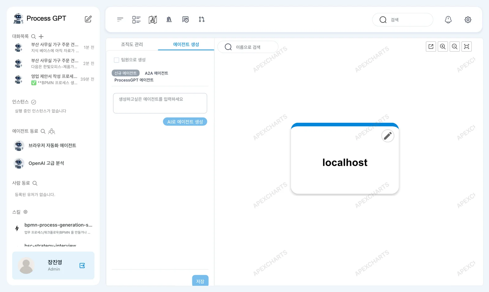
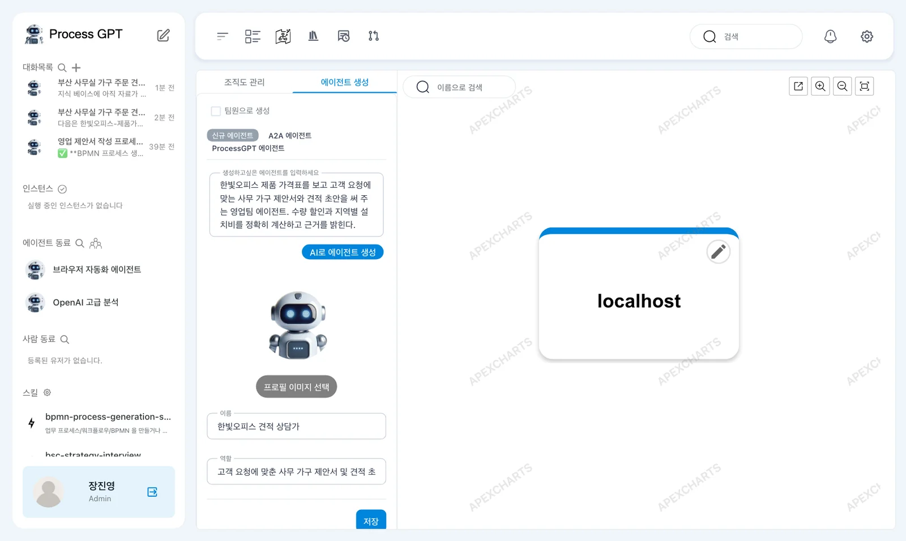
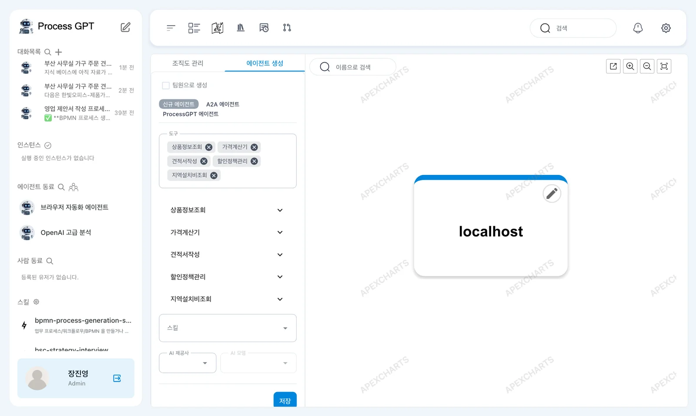
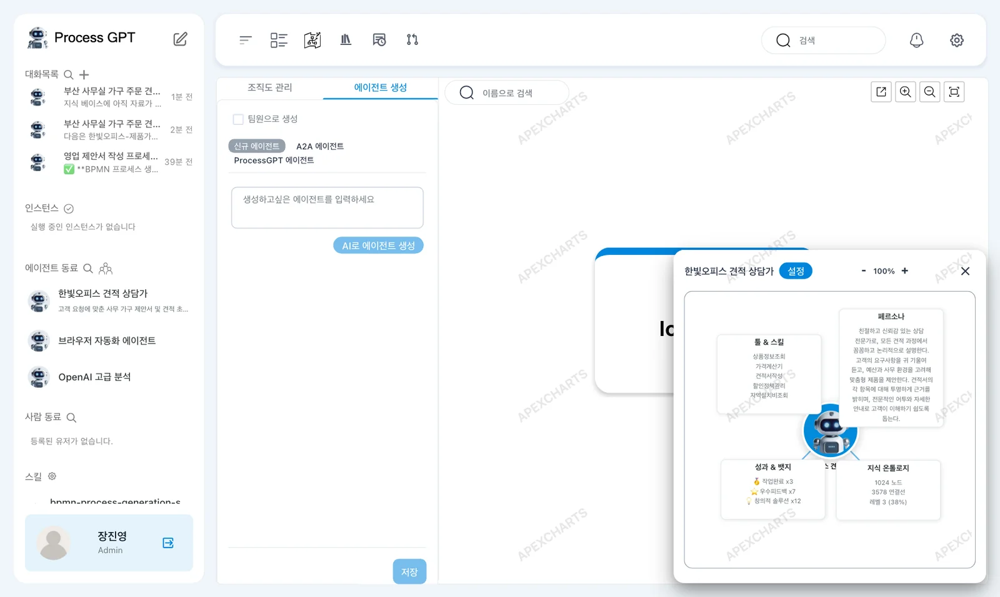

조직도의 「에이전트 생성」에서 하는 일을 한 문장으로 적으면, AI가 이름·역할·목표·페르소나·도구를 채운 에이전트 초안을 만듭니다. 초안을 살펴보고 저장해 사이드바의 「에이전트 동료」에 「한빛오피스 견적 상담가」를 들입니다.
에이전트 동료란#
Process GPT에서 에이전트는 사람 동료처럼 이름과 맡은 일이 있는 AI입니다. 대화로 일을 시키거나(10장), 프로세스의 한 단계를 맡깁니다. 에이전트를 만들 때 적는 것은 다음과 같습니다.
| 항목 | 뜻 | 예 |
|---|---|---|
| 이름 · 역할 | 사이드바와 조직도에 보이는 이름, 한 줄 설명 | 한빛오피스 견적 상담가 |
| 목표 | 이 에이전트가 이루려는 것 | 가격표를 바탕으로 견적서를 정확하게 작성 |
| 페르소나 | 말투와 일하는 태도 | 친절하고 꼼꼼하게, 근거를 밝히며 |
| 도구 | 쓸 수 있는 MCP 서버의 이름(14장, 준비 중) | (이 장에서는 연결하지 않음) |
| 스킬 | 일하는 방법을 적은 문서 | (이 장에서는 비움) |
| AI 제공사 · 모델 | 답을 만들 언어 모델. 비우면 설치할 때 정한 기본 모델 | (비움) |
처음부터 있는 「브라우저 자동화 에이전트」와 「OpenAI 고급 분석」도 이렇게 만든 에이전트입니다.
따라 하기 1 — 한 문장으로 초안 만들기#
- 사이드바 「에이전트 동료」 옆의 사람 모양 아이콘을 눌러 조직도를 엽니다.
- 왼쪽 위 「에이전트 생성」 탭을 누릅니다. 「신규 에이전트」가 골라져 있습니다(옆의 「A2A 에이전트」, 「ProcessGPT 에이전트」는 바깥에서 돌아가는 에이전트를 등록할 때 씁니다).
- 「생성하고싶은 에이전트를 입력하세요」 칸에 아래 문장을 적고 「AI로 에이전트 생성」을 누릅니다.

한빛오피스 제품 가격표를 보고 고객 요청에 맞는 사무 가구 제안서와 견적 초안을 써 주는 영업팀 에이전트. 수량 할인과 지역별 설치비를 정확히 계산하고 근거를 밝힌다.
실습에서는 약 4초 만에 칸이 채워졌습니다.

| 칸 | AI가 채운 값 |
|---|---|
| 이름 | 한빛오피스 견적 상담가 |
| 역할 | 고객 요청에 맞춘 사무 가구 제안서 및 견적 초안 작성 |
| 목표 | 한빛오피스 제품 가격표를 바탕으로 월 50건 이상의 고객 맞춤 견적서를 정확하게 작성하고, 수량 할인 및 지역별 설치비를 100% 반영하여 견적 근거를 명확히 제시한다. |
| 페르소나 | 친절하고 신뢰감 있는 상담 전문가로, 모든 견적 과정에서 꼼꼼하고 논리적으로 설명한다. … |
| 도구 | 상품정보조회, 가격계산기, 견적서작성, 할인정책관리, 지역설치비조회 |
같은 문장을 넣어도 AI가 쓰는 말은 조금씩 다릅니다. 마음에 들지 않는 칸은 직접 고칩니다.
따라 하기 2 — 초안 살펴보고 저장하기#
- 왼쪽 칸을 아래로 내려 목표·페르소나·도구·스킬·AI 제공사를 훑어봅니다.
- 맨 아래 「저장」을 누릅니다.
- 오른쪽에 「한빛오피스 견적 상담가 · 설정」 창이 뜨고, 사이드바 「에이전트 동료」에 새 에이전트가 들어옵니다.

도구 칸은 MCP 서버 이름입니다
도구 칸의 이름은 에이전트에 붙일 MCP 서버를 가리킵니다. AI가 지어 넣은 「가격계산기」 같은 이름은 실제로 연결된 MCP 서버가 없어서 아무 도구도 붙지 않습니다. 그대로 두어도 대화에는 지장이 없습니다. 실제 도구는 14장(준비 중)에서 MCP 서버를 연결한 뒤 그 이름으로 넣습니다.

설정 창은 에이전트를 가운데 두고 「툴 & 스킬」, 「페르소나」, 「성과 & 뱃지」, 「지식 온톨로지」를 보여 줍니다. 「성과 & 뱃지」(작업완료 x3 등)와 「지식 온톨로지」(1024 노드 등)의 숫자는 현재 버전에서 모든 에이전트에 똑같이 나오는 예시 값입니다. 방금 만든 에이전트의 실제 기록이 아닙니다.
조직도 배경의 「APEXCHARTS」 글씨
조직도 그림 뒤에 비스듬히 보이는 「APEXCHARTS」는 조직도를 그리는 그림 라이브러리가 사용 허가 키 없이 돌 때 찍는 표시입니다. 기능에는 영향이 없습니다.
따라 하기 3 — 고치기#
사이드바에서 에이전트를 누르면 왼쪽에 프로필이 열립니다(10장). 이름 옆 연필 아이콘으로 목표·페르소나·도구를 고치고, 빨간 휴지통으로 지웁니다. 이 튜토리얼은 다음 장에서 이 에이전트와 대화하니 지우지 마세요.
다음 장으로#
「한빛오피스 견적 상담가」가 동료로 들어왔습니다. 다음 장에서는 이 에이전트에게 가격표를 쥐여 주고 견적 초안을 받습니다(10장).
확인 문제
- 「AI로 에이전트 생성」은 무엇을 해 주나요? 저장까지 저절로 되나요?
- 도구 칸에 「가격계산기」라고 적혀 있으면 에이전트가 계산기 도구를 쓸 수 있나요?
- 설정 창의 「성과 & 뱃지」에 「작업완료 x3」이 보입니다. 이 에이전트가 일을 세 번 끝냈다는 뜻인가요?
답
- 적은 문장을 바탕으로 이름·역할·목표·페르소나·도구 칸을 채운 초안을 만듭니다. 살펴보고 고친 뒤 「저장」을 눌러야 에이전트가 생깁니다.
- 아닙니다. 도구 칸은 MCP 서버 이름이라, 그 이름의 MCP 서버가 연결돼 있어야 도구가 붙습니다(14장).
- 아닙니다. 현재 버전에서는 모든 에이전트에 같은 예시 값이 나옵니다.